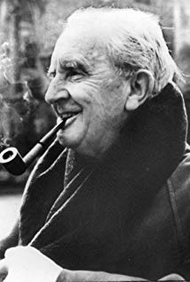

J.R.R. Tolkien
"Not all those who wander are lost." - J.R.R. Tolkien

J. R. R. Tolkien smiling gleefully as he smokes his pipe.
A Brief History of Tolkien, in Bullet Points
- January 3, 1892: J. R. R. (James Ronald Reuel) Tolkien was born in Bloemfontein in South Africa.
- 1904: Mabel Tolkien, J. R. R. Tolkien's mother, died of acute diabetes at around the age of 34. Tolkien was 12.
- 1909: Tolkien put together The Book of the Foxroot, a sixteen page notebook showcasing the "earliest example of one of his invented alphabets." It was in the summer of this very same year that Tolkien decided he was in love with a woman who was three years his senior. Her name was Edith Mary Bratt.
- 1911: While at King Edward's school, Tolkien and three of his friends formed the Tea Club and Barrovian Society (T.C.B.S.)
- 1911: Tolkien began his studies at Exeter College, Oxford.
- 1913: Tolkien and Edith became formally engaged.
- 1914: Britain entered into World War I.
- 1915: Tolkien, having elected not to volunteer to join the British Army and, instead, finish his studies (much to the scrutiny of his own relatives), graduated Exeter College with first-class honours. After he graduated, however, he was comissioned as a temporary second lieutenant in Lancashire Fusiliers.
- 1916: In March, Tolkien married Edith Bratt at St. Mary Immaculate Roman Catholic Church, in Warwick, England. In July of this same year, Tolkien arrived at the Somme and participated in the assaults on the Schwaben Redoubt and the Leipzig salient. And in November, he was invalidated back to England (where he rotated between hospitals and garrison duities) after having caught trench fever.
- 1920: Tolkien left the army and became the youngest professor at the Univerity of Leeds in the very same year.
- 1928: Tolkien finished his translation of Beowulf.
- 1937: Tolkien's The Hobbit was published.
- 1937-1949: J. R. R. Tolkien undertook the massive, creative work which would make his name nearly synonomous with the fantasy book genre as a whole and would inspire creatives for decades (perhaps, centuries) to come. The Lord of the Rings.
- 1954-1955: The trilogy was published over the course of one year.
- 1957: The Lord of the Rings was awarded the International Fantasy Award.
- 1961: Tolkien's dear friend, C. S. Lewis nominated him for the Nobel Prize in Literature.
- 1971: Tolkien's beloved wife, Edith, died.
- September 2, 1973: J. R. R. Tolkien died and was buried with his wife. His legacy and his inspiration, however, has proved timeless.